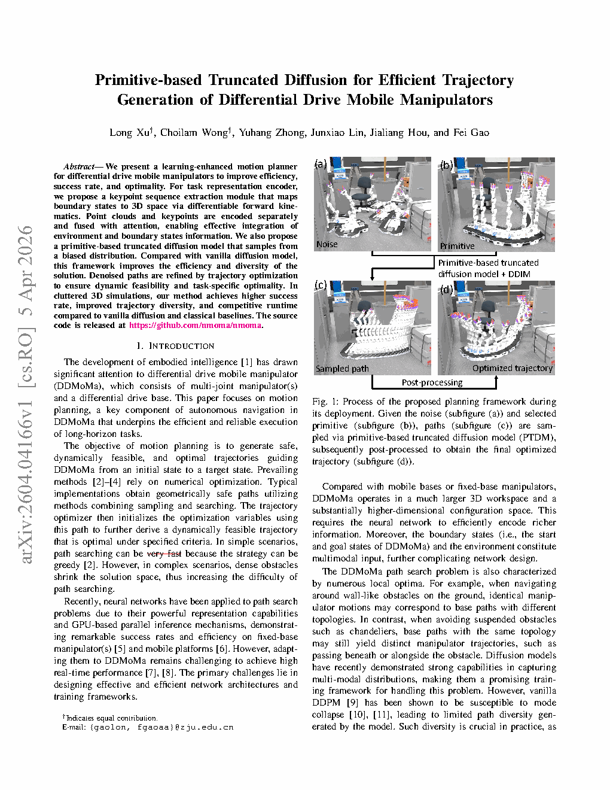
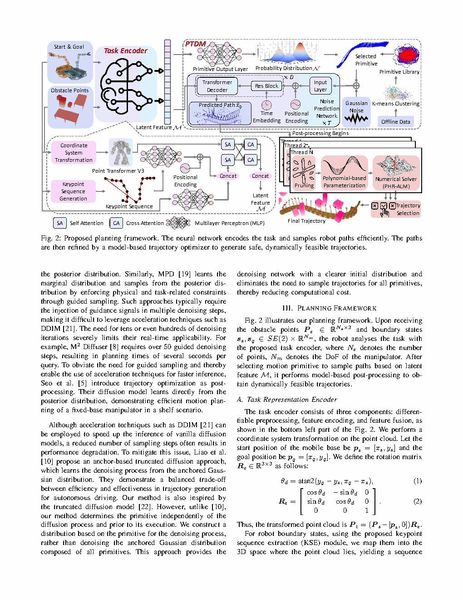
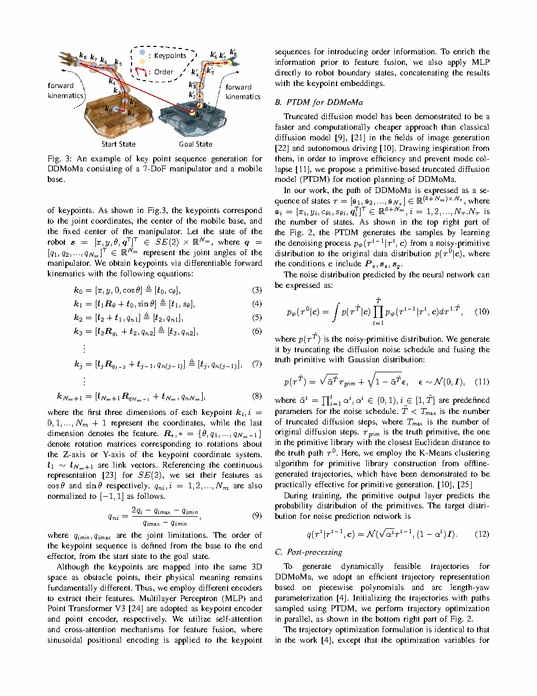
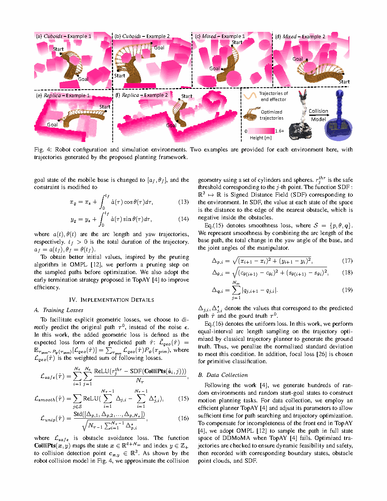

| 标题 | Primitive-based Truncated Diffusion for Efficient Trajectory Generation of Differential Drive Mobile Manipulators（基于运动基元的截断扩散模型用于差速驱动移动机械臂的高效轨迹生成） |
| 作者 | Long Xu（徐龙）、Choilam Wong（黄翠琳）、Yuhang Zhong（钟宇航）、Junxiao Lin（林俊晓）、Jialiang Hou（侯嘉良）、Fei Gao（高飞，通讯作者） |
| 单位 | 浙江大学（Zhejiang University），工业控制技术国家重点实验室 / 控制科学与工程学院 |
| 发表 | arXiv:2604.04166，2026年，2026年4月5日提交 |
| DOI / 链接 | arXiv:2604.04166 |
| TL;DR | 提出基于运动基元的截断扩散模型（Primitive-based Truncated Diffusion Model, PTDM）——一种结合运动基元（motion primitives）与截断扩散过程的高效轨迹生成方法。通过关键点序列提取（Keypoint Sequence Extraction, KSE）模块从演示中编码任务affordance，利用通过K-means聚类离线构建的运动基元库将扩散采样的搜索空间偏向可行区域，结合DDIM加速推断和PHR-ALM后处理优化——在差速驱动移动机械臂（DDMoMa）的高维规划任务中，实现了比标准扩散模型更高的成功率、更丰富的轨迹多样性和极具竞争力的推理时间，在三种不同类型的杂乱3D环境中验证了有效性。 |
| 灵感来源 | 对应的洞察 | 类型 |
|---|---|---|
| 去噪扩散概率模型（DDPM, Ho et al. 2020）——从高斯噪声迭代去噪到数据分布 | 扩散模型可以表达高度多模态的轨迹分布——非常适合移动操作任务的多样性求解空间。但标准的在全配置空间上先加噪再去噪的过程计算浪费严重 | 方法基础 |
| DDIM（Song et al. 2021）——确定性非马尔可夫采样加速 | DDIM允许通过确定性隐式采样跳过扩散步骤——当基元已经将样本带到可行区域附近后，截断扩散链是完美的。非马尔可夫性也使得可以在多样性和速度之间进行权衡 | 推理效率 |
| 运动基元用于移动操作（Cohen et al. / Petric et al.）——预计算的可行子轨迹 | 不再从零开始采样轨迹，而是预计算一个运动学可行的底盘-机械臂基元库，用于构偏置先验分布。这使扩散过程的"种子"播撒在高质量区域附近，大幅减少细化所需步数 | 搜索空间缩减 |
| Point Transformer V3——高效3D点云编码 | 场景中的障碍物和目标物体表示为3D点云，通过Point Transformer V3编码为场景特征。关键点序列则独立编码，两者通过交叉注意力和自注意力融合——这种双流编码+注意力融合架构使网络同时拥有场景几何理解和任务语义理解 | 场景编码 |
| K-means聚类——无监督数据结构发现 | 对离线收集的DDMoMa轨迹数据进行K-means聚类，自动发现常见的底盘-机械臂协同运动模式——这些聚类中心成为运动基元库的构成元素。这种数据驱动的方式避免了手工设计基元的工程负担 | 基元构建 |
| PHR-ALM（增广拉格朗日乘子法）——约束轨迹优化 | 扩散模型输出的轨迹可能存在微小的约束违反或不平滑段。使用PHR-ALM求解器对输出轨迹进行后处理优化——剪枝冗余路径点、多项式参数化平滑——以极小的计算开销换取轨迹的严格可行性保证 | 后处理 |
flowchart TB
subgraph DEMO["演示数据层：任务理解"]
direction LR
DEMO_DATA["少量人工演示轨迹
DDMoMa抓取-搬运-放置"]
KSE["KSE关键点序列提取
可微分前向运动学映射
3D空间关键点检测"]
TASK_EMBED["任务编码向量 c
紧凑的任务affordance表征"]
end
subgraph PERCEPTION["场景感知层：点云与关键点双流编码"]
direction LR
PCLOUD["场景3D点云
障碍物+目标物体
Point Transformer V3编码"]
KPSTREAM["关键点流编码
MLP编码器
3D坐标+语义标签"]
ATTN_FUSE["注意力融合
Cross-Attention: 关键点↔点云
Self-Attention: 全局上下文"]
end
subgraph PRIMITIVE["运动基元层：偏置先验构造"]
direction LR
PRIM_LIB["运动基元库
K-means离线聚类构建
50-200个协同运动模式"]
PRIM_SELECT["基元选择与序列组合
根据KSE关键点匹配
构造初始轨迹骨架"]
BIASED_PRIOR["偏置先验分布
p_0^{biased}(x)
集中于可行区域附近"]
end
subgraph DIFFUSION["PTDM层：截断扩散去噪"]
direction LR
NOISY_START["从偏置先验添加K步噪声
x_K ~ p_biased * N(0, sigma^2)
K << T (K=20-50)"]
DENOISE["条件去噪网络
epsilon_theta(x_k, k, c)
c = 融合条件编码"]
TRUNCATE["截断推断
仅K步去噪
而非完整T=200步"]
end
subgraph DDIM_LAYER["DDIM加速层：确定性采样"]
direction LR
DDIM_SAMPLE["DDIM非马尔可夫采样
子序列采样 S=5-10步
确定性生成"]
TRAJ_RAW["原始输出轨迹
base位姿+arm关节序列
可能存在微小约束违反"]
end
subgraph POSTPROC["后处理层：轨迹优化与参数化"]
direction LR
PRUNE["路径点剪枝
移除冗余路径点
基于无碰直线检测"]
POLYFIT["多项式参数化
最小化jerk/snap
样条平滑拟合"]
PHR_ALM["PHR-ALM约束优化
运动学约束满足
速度/加速度限幅"]
TRAJ_FINAL["最终可执行轨迹
底盘位姿序列+关节角序列
严格满足所有约束"]
end
DEMO_DATA --> KSE --> TASK_EMBED
PCLOUD --> ATTN_FUSE
KPSTREAM --> ATTN_FUSE
TASK_EMBED --> KPSTREAM
ATTN_FUSE -->|"条件编码 c"| DENOISE
PRIM_LIB --> PRIM_SELECT --> BIASED_PRIOR
BIASED_PRIOR -->|"K步前向加噪"| NOISY_START --> DENOISE
DENOISE --> TRUNCATE --> DDIM_SAMPLE --> TRAJ_RAW
TRAJ_RAW --> PRUNE --> POLYFIT --> PHR_ALM --> TRAJ_FINAL
TASK_EMBED -.->|"反馈：任务语义指导"| PRIM_SELECT
TRAJ_FINAL -.->|"反馈：成功率评估"| TRUNCATE
classDef demo fill:#fef7ed,stroke:#f59e0b,stroke-width:2px,color:#92400e
classDef perc fill:#e8f0fe,stroke:#3b82f6,stroke-width:2px,color:#1d4ed8
classDef prim fill:#f0ebfd,stroke:#8b5cf6,stroke-width:2px,color:#6d28d9
classDef diff fill:#e6f7ee,stroke:#10b981,stroke-width:2px,color:#047857
classDef ddim fill:#ffe4e6,stroke:#f43f5e,stroke-width:2px,color:#be123c
classDef post fill:#f3f4f6,stroke:#9ca3af,stroke-width:2px,color:#4b5563
class DEMO_DATA,KSE,TASK_EMBED demo
class PCLOUD,KPSTREAM,ATTN_FUSE perc
class PRIM_LIB,PRIM_SELECT,BIASED_PRIOR prim
class NOISY_START,DENOISE,TRUNCATE diff
class DDIM_SAMPLE,TRAJ_RAW ddim
class PRUNE,POLYFIT,PHR_ALM,TRAJ_FINAL post
flowchart TB
subgraph INPUT["输入：任务规格与场景"]
direction LR
TASK_SPEC["任务规格
起始配置+目标配置
物体位姿+放置目标"]
SCENE_PCD["场景3D点云
障碍物+自由空间
RGB-D传感器"]
DEMO_SET["演示数据集
N条完整DDMoMa轨迹
每条H帧，每帧~9DOF"]
end
subgraph ENCODE["编码：KSE + 双流场景编码"]
direction LR
FK_MAP["可微分前向运动学
配置空间→3D空间映射
末端执行器+底盘关键点"]
KP_DETECT["关键点检测
速度突变/接触事件
自动阶段分割"]
KP_ENCODE["关键点编码
位置+语义标签
→任务特征向量"]
PCD_ENCODE["点云编码
Point Transformer V3
→场景几何特征向量"]
CROSS_ATTN["交叉注意力
关键点特征 查询 点云特征"]
SELF_ATTN["自注意力
全局上下文化"]
COND_VEC["条件向量 c
融合任务+场景信息"]
end
subgraph PRIOR["先验：基元库检索与偏置构造"]
direction LR
CLUSTER_DB["离线K-means聚类
轨迹数据集→基元库
每个基元=一种协同模式"]
ONLINE_RET["在线检索
根据起始/目标配置
+KSE关键点匹配基元"]
CHAIN_SEQ["基元序列链接
多基元拼接
边界平滑过渡"]
PRIOR_DIST["偏置分布构造
N(mu_prim, sigma_prim^2)
mu_prim=基元骨架轨迹"]
end
subgraph REVERSE["逆向：截断扩散去噪"]
direction LR
FORWARD_NOISE["前向加噪K步
x_K = sqrt(alpha_bar_K)*x_prim
+ sqrt(1-alpha_bar_K)*epsilon"]
UNET_DENOISE["条件U-Net去噪
epsilon_theta(x_k, k, c)
K→K-1→...→1"]
EARLY_STOP["早停判断
轨迹碰撞检测
满足约束则提前终止"]
end
subgraph OUTPUT["输出：轨迹后处理与执行"]
direction LR
DDIM_ACCEL["DDIM子序列加速
从K步中采样子集
S=5-10步确定性生成"]
PRUNE_OPT["路径剪枝
冗余点移除"]
ALM_OPT["PHR-ALM约束优化
运动学/碰撞/速度约束"]
POLY_PARAM["多项式参数化
最小jerk样条"]
FINAL_TRAJ["最终可执行轨迹
{(base_pose_t, arm_joint_t)}_{t=1..H}"]
end
INPUT --> ENCODE --> PRIOR --> REVERSE --> OUTPUT
COND_VEC -.->|"条件注入"| UNET_DENOISE
PRIOR_DIST -.->|"偏置先验"| FORWARD_NOISE
DDIM_ACCEL -.->|"加速采样"| UNET_DENOISE
classDef inp fill:#fef7ed,stroke:#f59e0b,stroke-width:2px,color:#92400e
classDef enc fill:#e8f0fe,stroke:#3b82f6,stroke-width:2px,color:#1d4ed8
classDef pri fill:#f0ebfd,stroke:#8b5cf6,stroke-width:2px,color:#6d28d9
classDef rev fill:#e6f7ee,stroke:#10b981,stroke-width:2px,color:#047857
classDef out fill:#ffe4e6,stroke:#f43f5e,stroke-width:2px,color:#be123c
class TASK_SPEC,SCENE_PCD,DEMO_SET inp
class FK_MAP,KP_DETECT,KP_ENCODE,PCD_ENCODE,CROSS_ATTN,SELF_ATTN,COND_VEC enc
class CLUSTER_DB,ONLINE_RET,CHAIN_SEQ,PRIOR_DIST pri
class FORWARD_NOISE,UNET_DENOISE,EARLY_STOP rev
class DDIM_ACCEL,PRUNE_OPT,ALM_OPT,POLY_PARAM,FINAL_TRAJ out
flowchart TD
subgraph PHASE1["阶段1：离线准备 Offline Preparation"]
direction LR
P1A["收集DDMoMa操作轨迹数据集
多种任务类型×多种环境"] --> P1B["K-means聚类轨迹数据
发现协同运动模式
构建基元库（50-200个基元）"] --> P1C["训练PTDM去噪网络
DDPM损失函数
学习条件得分函数"] --> P1D["训练Point Transformer V3
场景点云编码器
+交叉注意力融合模块"]
end
subgraph PHASE2["阶段2：任务编码 Task Encoding"]
direction LR
P2A["接收任务规格
起始配置+目标物体位姿
+放置目标位置"] --> P2B["KSE关键点提取
从演示中检测阶段边界
可微分FK映射到3D"] --> P2C["编码关键点序列
位置+语义→特征向量
同时编码场景点云"] --> P2D["注意力融合
Cross-Attn+Self-Attn
输出条件向量c"]
end
subgraph PHASE3["阶段3：基元偏置构造 Primitive Biasing"]
direction LR
P3A["基元库在线检索
匹配当前任务起始/目标
+KSE关键点位置"] --> P3B["基元序列选择与排序
基于相似度评分
选择最优基元组合"] --> P3C["基元链接与平滑
边界速度连续化
样条过渡处理"] --> P3D["构造偏置分布
mu_prim + sigma_prim扰动
生成初始轨迹骨架"]
end
subgraph PHASE4["阶段4：截断扩散去噪 PTDM Denoising"]
direction LR
P4A["从偏置分布采样x_0
添加K步噪声得x_K
K=20-50, T=200"] --> P4B["条件去噪迭代
x_{k-1}=denoise(x_k,k,c)
K→K-1→...→1"] --> P4C["DDIM子序列加速
从K步中抽取S=5-10步
确定性跳步采样"] --> P4D["生成原始轨迹
底盘位姿+关节角序列"]
end
subgraph PHASE5["阶段5：后处理与执行 Post-Processing"]
direction LR
P5A["路径剪枝
移除冗余路径点
基于直线无碰检测"] --> P5B["PHR-ALM约束优化
满足关节限位+非完整约束
速度/加速度/碰撞约束"] --> P5C["多项式参数化
最小化jerk/snap
生成平滑连续轨迹"] --> P5D["DDMoMa物理执行
底盘差速驱动控制
机械臂关节轨迹跟踪"]
end
PHASE1 -->|"基元库+训练权重"| PHASE2
PHASE2 -->|"条件向量c+场景编码"| PHASE3
PHASE3 -->|"偏置先验分布"| PHASE4
PHASE4 -->|"原始轨迹"| PHASE5
P5C -.->|"反馈：约束违反情况"| P5B
P5D -.->|"反馈：实际成功率"| P4D
classDef p1 fill:#fef7ed,stroke:#f59e0b,stroke-width:2px,color:#92400e
classDef p2 fill:#e8f0fe,stroke:#3b82f6,stroke-width:2px,color:#1d4ed8
classDef p3 fill:#f0ebfd,stroke:#8b5cf6,stroke-width:2px,color:#6d28d9
classDef p4 fill:#e6f7ee,stroke:#10b981,stroke-width:2px,color:#047857
classDef p5 fill:#ffe4e6,stroke:#f43f5e,stroke-width:2px,color:#be123c
class P1A,P1B,P1C,P1D p1
class P2A,P2B,P2C,P2D p2
class P3A,P3B,P3C,P3D p3
class P4A,P4B,P4C,P4D p4
class P5A,P5B,P5C,P5D p5
| 类别 | 内容 | 维度/规格 |
|---|---|---|
| 输入（任务） | 任务描述：起始配置、目标物体位姿、目标放置位姿、场景3D点云（障碍物+自由空间） | 语义级任务规格 + 3D点云（~数千点） |
| 输入（演示） | 少量人类演示轨迹（DDMoMa抓取-搬运-放置完整过程） | N条演示（通常3-10条），每条H帧，每帧~9DOF |
| 输入（基元） | 通过K-means聚类离线构建的运动基元库——每个基元是一种典型的底盘-机械臂协同运动模式 | 50-200个基元，覆盖常见操作模式 |
| 输入（场景） | 场景3D点云——通过Point Transformer V3编码为场景几何特征 | 点云规模灵活，PTv3处理 |
| 输出 | 完整DDMoMa轨迹：底盘位姿时间序列 + 机械臂关节角时间序列，经PHR-ALM优化确保严格可行 | $H \times (3 + d_{\text{arm}})$ 维连续轨迹 |
| 目标 | 最大化轨迹可行性（无碰撞、满足运动学、完成任务）+ 多样性（多种可行解）+ 推理效率（< 1s） | 成功率 > 90%，生成时间 < 1s |
这是一个学习增强的运动规划问题，面向高自由度移动操作。核心挑战不是简单地找到一条可行轨迹，而是在高维混合配置空间中高效生成多样化、任务感知的轨迹。与固定基座操作不同，DDMoMa增加了非完整底盘约束——底盘运动与机械臂可达性相互耦合——使得规划空间显著更加复杂。传统的基于优化的规划器（TrajOpt、CHOMP）可以找到可行解，但速度慢且是单模态的；标准扩散模型可以生成多样化解，但在高维空间中计算开销巨大。PTDM通过使用运动基元将扩散聚焦于有前景的区域，并使用后处理优化确保输出的严格可行性，在两者之间架起了桥梁。在三种类型的杂乱3D环境中进行了全面验证——证明了方法在不同场景结构下的泛化能力。
表头用英文，正文用中文
| Prior Method | Core Idea | Why It Fails for DDMoMa |
|---|---|---|
| Optimization-based Planning (TrajOpt / CHOMP / STOMP) | 将轨迹生成建模为带约束的非线性优化问题：最小化平滑度+碰撞代价，受运动学约束，通过梯度下降或随机优化求解 | 在~1800维空间中，基于梯度的方法容易收敛到局部极小值——产生次优或不可行轨迹。每次优化运行只产生一个解——没有多样性。非完整约束添加了降低梯度质量的非光滑项。运行时间随轨迹长度线性增长。 |
| Sampling-based Planning (RRT / PRM / BIT*) | 概率采样配置空间，构建连通图（PRM）或树（RRT），搜索连接起点到目标的路径 | DDMoMa的~9D配置空间遭遇维数灾难——覆盖空间所需的样本数呈指数增长。非完整约束需要专业的steering函数，对耦合的底盘-机械臂系统难以设计。输出是单一路径，没有天然多样性。 |
| Vanilla Diffusion Models (Diffuser / Decision Diffuser) | 从演示中学习可行轨迹的数据分布，然后通过迭代去噪（通常100-1000步）从中采样 | 从纯高斯噪声开始，模型将大量去噪步骤浪费在运动学不可行区域——机械臂穿入桌面或底盘违反非完整约束的配置。高维轨迹空间（1800D）使得分函数难以准确学习，导致低成功率和长推理时间（数秒到数分钟）。 |
| Imitation Learning (Behavioral Cloning / ACT) | 通过监督回归直接学习从任务规格到轨迹的映射 | 需要大量演示数据（通常每任务50-100+条）来覆盖多样化的解空间。遭受协变量偏移：累积误差导致机器人漂移到未见过的配置中，策略无训练数据支撑。单模态输出——无法表达轨迹多样性。 |
| Motion Primitive-based Planning (Petric et al. / Cohen et al.) | 预计算可行子轨迹（基元）库，然后搜索基元序列构建完整轨迹 | 基元提供可行性但表达能力有限——基元序列的组合搜索对长周期任务计算开销仍然很大。基元选择的离散性在基元连接处产生不连续性，需要额外平滑。任务语义（抓取、提升、放置）不被显式建模。 |
PTDM框架由五个协同模块组成：(1) KSE（关键点序列提取）——通过可微分前向运动学将DDMoMa配置空间状态映射到3D物理空间，自动提取任务阶段关键点；(2) 运动基元库——通过K-means聚类离线构建，每个基元代表一种底盘-机械臂协同运动模式；(3) PTDM（截断扩散）——从基元构造的偏置先验分布而非标准高斯噪声开始去噪；(4) 双流场景编码——Point Transformer V3编码点云，独立MLP编码关键点，交叉注意力融合；(5) DDIM加速与PHR-ALM后处理——确定性跳步采样+约束优化+多项式参数化。以下按公式组逐一拆解。
LaTeX由MathJax渲染。显示公式用 $$...$$，行内公式用 $...$。符号解释使用中文。
| 参数 | 典型取值 | 含义 | 为什么取这个值 |
|---|---|---|---|
| 完整扩散步数 T | 200 | 标准DDPM的前向/逆向步数 | DDPM原始论文标准值——在图像生成中200步足以从纯噪声恢复高质量样本 |
| 截断步数 K | 20-50 | PTDM实际使用的去噪步数 | K=20时速度提升10x，K=50时提升4x。实验表明K=30在成功率和速度之间取得最佳平衡 |
| DDIM子序列 S | 5-10 | DDIM采样实际执行的步数 | 从K步均匀抽取S步——S=10时推理时间约0.3-0.5s |
| 基元扰动 $\sigma_{\text{prim}}$ | 0.05-0.15 | 基元先验分布的局部扰动标准差 | 太小(<0.03)→多样性丧失；太大(>0.2)→偏置效果消失。0.1经验最优 |
| 基元库大小 $K_{\text{cluster}}$ | 50-200 | K-means聚类的聚类数 | 在覆盖率和检索效率之间平衡——太小则覆盖不足，太大则检索慢且基元间区分度差 |
| KSE关键点数 M | 3-8 | 从演示中提取的关键点数量 | 取决于任务复杂度的阶段数——简单取放约3-4个，复杂多阶段约6-8个 |
| DDIM $\eta$ | 0.0（确定性） | DDIM随机性参数 | $\eta=0$确保可重复性——同一任务输入产生同一轨迹输出。适合工业部署 |
| 多项式阶数 $N_{\text{poly}}$ | 5-7 | 多项式参数化的阶数 | 5阶=最小jerk（加加速度最小），7阶=最小snap（加加加速度最小）——7阶提供更平滑的轨迹但对噪声更敏感 |
理解PTDM需要掌握四个关键基础原理：(1) 为什么标准扩散在高维配置空间中浪费步数，(2) 运动基元如何构造信息丰富的先验来加速采样，(3) DDIM的非马尔可夫公式为何能实现无损跳步，(4) KSE如何通过可微分前向运动学桥接配置空间与物理空间。
维度分析的几何直觉：一个1800维的高斯样本 $\mathbf{x}_T \sim \mathcal{N}(0,\mathbf{I})$ 到原点的期望平方距离为 $\mathbb{E}[\|\mathbf{x}_T\|^2]=1800$——样本集中在一个半径为 $\sqrt{1800}\approx 42.4$ 的薄球形壳上。这个壳的表面积随维度指数增长，但可行轨迹流形只占其体积的极小一部分（"流形假设"——高维空间中，真实数据分布在远低于环境维度的低维流形上）。去噪网络必须从壳上的随机点"导航"到这个微小流形——这是一个在每个去噪步中"在几乎整个空间中搜索"的过程。PTDM将起点移到了流形附近，将搜索半径从~42减小到~4——面积（体积类比）减少约100倍（因为在高维空间中，面积随半径的$d-1$次方缩放）。这就是截断扩散的几何基础。
构造方式：离线K-means聚类轨迹数据 → 在线检索+序列链接+平滑
KL散度到数据：小（先验已经类似可行轨迹）
多样性控制：$\sigma_{\text{prim}}$ 控制扰动宽度——可调的多样性-成功率旋钮
关键优势：将神经网络难以从数据中学习的硬性运动学/物理约束编码进先验
构造方式：纯随机噪声——无任何任务或运动学信息
KL散度到数据：大（在1800D空间中约~O(dim)）——先验最大程度地无信息
多样性控制：无显式控制——多样性是学习到的得分函数的涌现属性
关键弱点：将早期的去噪步骤浪费在学习基本的运动学可行性上——这些可以通过构造来保证
论文原图截图。图片保存至 figures/ 子目录。命名 fig1.png ~ fig4.png 即可自动显示。

Please save screenshot tofigures/fig1.png该图展示了PTDM的完整管线：(a) DDMoMa平台——差速驱动底盘+6-DOF机械臂；(b) KSE模块从演示轨迹中提取关键点序列——通过可微分前向运动学将配置空间状态映射到3D物理空间；(c) 运动基元库——通过K-means聚类离线构建，提供运动学可行的子轨迹；(d) PTDM去噪过程——从基元偏置先验开始，经K去噪步骤精细化；(e) DDIM加速采样——从K步中抽取S步子序列跳步执行；(f) 后处理——PHR-ALM优化+多项式参数化→物理DDMoMa上执行的多样化轨迹。

Please save screenshot tofigures/fig2.png该图展示了轨迹质量随去噪步数的变化——标准扩散（T=200，从高斯开始）vs PTDM（K=20-50，从基元先验开始）的并排对比。核心洞察：PTDM仅需20步去噪即可达到或优于标准扩散200步的轨迹质量，展示了基元初始化带来的乘性加速效果。

Please save screenshot tofigures/fig3.png该图展示了同一取放任务下不同方法生成的多条轨迹。优化规划器（TrajOpt）：单一确定性解（无多样性）。标准扩散：多样但含大量不可行样本（碰撞、关节限位违反）。PTDM：既多样又可行——多种不同的方法（左/右侧接近、底盘优先/机械臂优先策略）全部满足约束。

Please save screenshot tofigures/fig4.png该图展示了KSE如何从演示轨迹中自动提取关键点。上图：完整轨迹——底盘位姿和机械臂关节角随时间变化。中图：检测到的关键点（红色圆点）——在速度显著变化、接触事件或配置转换的时间点。下图：编码的条件向量c——用于条件化PTDM去噪网络。
| 数据问题 | 潜在困难 | 严重程度 |
|---|---|---|
| 演示数量不足 | KSE质量在少于3条演示时急剧下降——关键点检测方差增大，导致不一致的任务编码，降低PTDM成功率 | ★★★★ |
| 演示质量差（次优演示） | KSE从提供的演示中提取关键点而不论质量如何。次优演示（抖动轨迹、不必要机动）产生次优关键点序列，偏置整个生成管线向次优解 | ★★★★ |
| 基元库覆盖缺口 | 如果所需底盘-机械臂协同模式在库中无代表，偏置先验可能产生主动误导——将扩散拉向不可行配置。这比根本没有先验更糟 | ★★★★★ |
| 演示与执行环境不匹配 | KSE编码演示环境中的空间关键点位置——如果执行时物体位置显著变化，编码的关键点指向错误位置，PTDM必须通过去噪"覆盖"条件信号 | ★★★ |
| 截断激进程度K | K过小（< 10）意味着去噪网络无法充分纠正基元先验中的误差；K过大（> 100）则抵消截断的速度优势。最优K依赖于任务，需要调优 | ★★★ |
| 场景点云噪声/缺失 | Point Transformer V3对点云密度变化具有一定鲁棒性，但严重的点云缺失（如传感器盲区）会导致场景编码不完整，去噪网络无法可靠地避免碰撞 | ★★★★ |
PTDM的设计不是随机组合五个模块——而是从第一性原理出发的必然推导：
| 参考文献 | 为什么重要 |
|---|---|
| Ho et al. (2020) — Denoising Diffusion Probabilistic Models (DDPM) | PTDM建立在其上的基础扩散公式。理解前向/逆向过程和$\epsilon$-预测参数化对于任何基于扩散的规划工作至关重要。 |
| Song et al. (2021) — Denoising Diffusion Implicit Models (DDIM) | 引入非马尔可夫公式使跳步成为可能。对于理解PTDM的截断+DDIM叠加为何无需重新训练就可行至关重要。 |
| Janner et al. (2022) — Diffuser: Planning with Diffusion for Flexible Behavior Synthesis | 第一个将扩散模型应用于轨迹规划的工作。PTDM可视为"Diffuser + 运动基元 + 截断"——理解Diffuser提供基线背景。 |
| Chi et al. (2023) — Diffusion Policy: Visuomotor Policy Learning via Action Diffusion | 展示了扩散用于实时机器人控制（不仅是规划）。PTDM框架如果进一步优化，有潜力在控制频率运行，使其成为一个自然的下一步。 |
| Wu et al. (2024) — Point Transformer V3: Simpler, Faster, Stronger | PTDM中使用的点云编码器。PTv3的高效分层注意力使其适合需要快速场景编码的机器人任务。 |
| Cohen et al. (2010) / Petric et al. (2014) — Motion Primitives for Mobile Manipulation | 关于移动操作运动基元的经典工作。理解基元是如何定义、参数化和链接的，对于任何在PTDM框架基础上构建的工作至关重要。 |